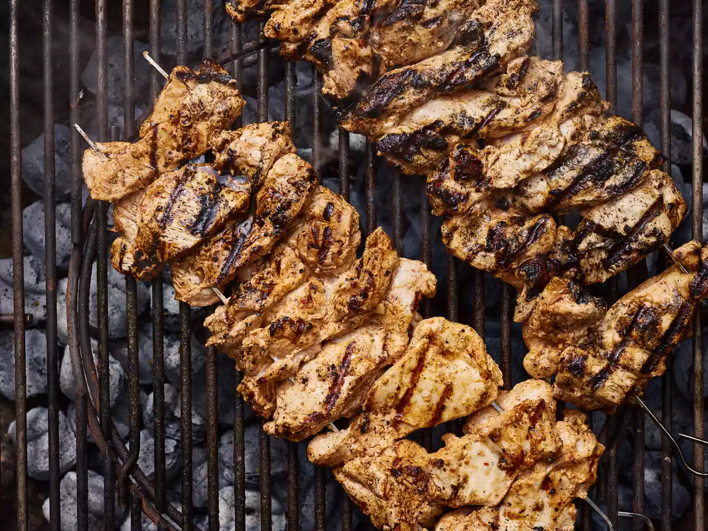

Iskender Recipe

This chicken kebab recipe uses a flavorful, yogurt-based marinade. I'd
like to think that all the chicken coming off American grills this summer
will be as tasty, juicy, and tender as these. Even inexperienced grillers
can produce impressive results! I'm not sure how "Turkish" this is — it's
loosely based on a lamb marinade I've used for a long time.
Ingredients
- 1 cup whole-milk Greek yogurt
- 6 cloves garlic, minced
- 2 tablespoons olive oil
- 2 tablespoons freshly squeezed lemon juice, or more to taste
- 2 tablespoons ketchup
- 1 tablespoon Aleppo red pepper flakes
- 1 tablespoon kosher salt
- 1 ½ teaspoons ground cumin
- 1 teaspoon paprika
Directives
-
Whisk yogurt, garlic, olive oil, lemon juice, ketchup, red pepper
flakes, salt, cumin, black pepper, paprika, and cinnamon together in a
large bowl.
-
Preheat an outdoor grill for medium-high heat and lightly oil the grate.
-
Using 2 skewers for each kebab, thread half of the chicken thighs onto
each pair of skewers making a fairly thick "log" shape.
- Place kebabs on the preheated grill.
-
Do not try to turn them until they begin to unstick from the grill, 3 or
4 minutes.
-
Turn kebabs and grill the other side for 3 to 4 minutes. An instant-read
thermometer inserted into the center should read at least 165 degrees F
(74 degrees C).
-
Last part is adding the sauce. Add the tomato souce on the meats and
melt some butter after that add this butter on the tomato souce. If you
wish you can add some yogurt side the plate.